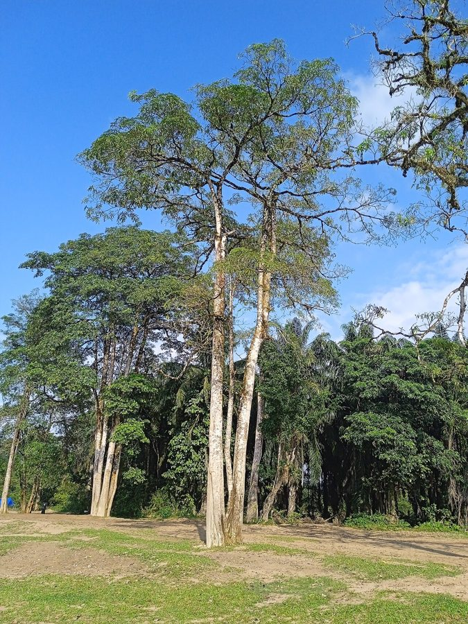

सप्तपर्णीDevil Tree
Alstonia scholaris · Apocynaceae · FLR-0122

- Scientific name
- Alstonia scholaris (L.) R. Br.
- Family
- Apocynaceae
- Hindi
- सप्तपर्णी
- Local names
- saptaparni, chhatiwan, chhatiyan, satwin, saptaparna
- Status here
- native
- IUCN
- not evaluated
- Review
- audited and independently read
When to look कब देखें
Present all year.
Uses and possibilities उपयोग और संभावनाएँ
“Traditional medicine” means a documented traditional use, not a claim that it works. Nothing on this page is medical advice.
Drawn from the documented uses in the profile below, where each is labelled traditional, current or a research lead. All uses →
सप्तपर्णी / Devil Tree
Alstonia scholaris (L.) R. Br. — Apocynaceae
सप्तपर्णी — एक सदाबहार पेड़ जिसकी पत्तियाँ तने पर सात या आठ की संख्या में गोल जैसी चक्कों में लगती हैं (hence "saptaparni" = seven leaves)। इसका नाम "डेविल ट्री" इसलिए पड़ा क्योंकि आयुर्वेद में इसे "दुष्ट" शक्तियों को दूर भगाने वाला माना जाता है। पेड़ से सफेद दूध निकलता है, जिसे पारंपरिक दवाओं में काम लाया जाता है। इसकी लकड़ी नरम होती है और स्लेट पर लिखने की तरह काली होती है, इसलिए इसे "ब्लैकबोर्ड ट्री" भी कहते हैं।
Quick Identification त्वरित पहचान
| Feature | Description |
|---|---|
| Size | Medium to tall evergreen tree, 10–20 m, with a distinctive tiered crown |
| Leaves | Whorled in groups of 6–9 (usually 7–8) around the stem, glossy green, linear-lanceolate, 8–12 cm, entire margins |
| Flowers | Small, white, sweet-scented, in terminal umbel-like clusters, March to May |
| Fruits | Very long, slender, paired pod-like follicles (20–45 cm), hanging down from branches |
| Latex | Copious white milky sap from broken stems or leaves |
| Bark | Dark grey, with a distinctive waxy appearance; wood cream, soft |
Field tip: Look for a tree with leaves arranged in tight whorls of seven or eight around the stem, like spokes of a wheel. The long drooping seed pods and the white latex confirm it is saptaparni.
हिंदी — कैसे पहचानें: पत्तियाँ 7-8 की संख्या में तने के चारों ओर गोल जैसी हों; लंबी, पतली, लटकती हुई फलियाँ; सफेद दूध।
Morphology आकारिकी
Biometrics (northern Indian plains):
| Measurement | Range |
|---|---|
| Height | 10–20 m |
| Trunk diameter | 25–60 cm |
| Leaf length | 8–12 cm |
| Leaf width | 1–2 cm |
| Flower cluster diameter | 2–3 cm |
| Follicle length | 20–45 cm |
| Follicle width | 4–7 mm |
Trunk and bark: Straight, with dark grey, waxy, smooth bark; wood pale yellow, soft, light, easily worked; timber is used for packing boxes and educational furniture.
Leaves: Whorled, simple, linear-lanceolate, glossy above, paler beneath, entire margins, very short petiole; the characteristic whorls are diagnostic.
Flowers: Small, white, fragrant, in terminal umbels; calyx and corolla 5-lobed; stamens on the corolla tube.
Fruits: Paired follicles, very long and slender, pendent, containing many seeds with a silky tail for wind dispersal.
Latex: Abundant white milky latex from all parts, containing alkaloids.
हिंदी: पत्तियाँ गोल जैसी 7-8 की जोड़ों में। फूल सफेद, खुशबूदार। लंबी-पतली, लटकती फलियाँ। सफेद दूध हर जगह।
Behaviour & Ecology व्यवहार और पारिस्थितिकी
A tree of tropical semi-evergreen and deciduous forest margins, tolerant of cultivation and urban conditions. The white flowers are visited by insects for nectar; the tree is not a major food source for wildlife. The long follicles ripen slowly, and the many windborne seeds allow the tree to colonise disturbed ground. In South Asia the tree is cultivated deliberately in temple grounds, where it is believed to have protective and medicinal properties.
The wood is so soft that it was traditionally used for making blackboards in schools — hence "blackboard tree" — and for packing boxes. It is light and easy to carve.
हिंदी: हल्की, नरम लकड़ी जिसे आसानी से काटा जा सकता है। स्कूलों में स्लेट के बजाय इसकी लकड़ी का इस्तेमाल होता था। हवा से बीजों को दूर ले जाता है।
Life Cycle / Phenology जीवन चक्र
| Month / season | Event |
|---|---|
| December–February | New leaf flush and growth |
| March–May | Flowering; sweet-scented white flowers in clusters |
| June–August | Follicles develop through monsoon |
| September–November | Follicles mature and dry; slow seed release |
| Lifespan | Decades; trees remain productive |
हिंदी: मार्च-मई में फूल, बहुत खुशबूदार। सर्दियों तक फलियाँ पकती हैं और बीज हवा से फैलते हैं।
Associated Species / Interactions संबंधित प्रजातियाँ
- Pollinators: Insects attracted to the sweet white flowers.
- Seed dispersal: Wind-dispersed seeds; minimal animal involvement.
- Temple association: Often planted near shrines in South Asia.
Pests and Diseases कीट और रोग
- Leaf-eating caterpillars occasionally.
- Root rot in waterlogged soils.
- Generally hardy and pest-resistant.
Agricultural / Human Relevance कृषि प्रासंगिकता
Traditional and Ethnobotanical Use (documented uses; not medical advice):
- Bark and latex. Listed in Kirtikar & Basu and classical Ayurvedic texts as an astringent, febrifuge, and for skin conditions. The latex is applied to wounds.
- Timber. The soft wood was traditionally used for slate writing boards in schools (chata patti). Now used for packing and decorative boxes.
- Sacred. Planted deliberately near temples where it is believed to protect the space.
Today. The medicinal use is declining with modern medical practice. The timber is still used locally for packing boxes.
Research direction (a lead, not a result). The alkaloid-rich latex has antimicrobial properties that have been isolated and studied in published literature; clinical trials of traditional preparations would require careful design.
हिंदी: छाल और दूध में ज़्यादा गुण माने जाते हैं। स्कूलों में स्लेट की जगह इसकी लकड़ी चलती थी। मंदिरों में लगाया जाता है।
Expected Locally स्थानीय रूप से अपेक्षित
Not a field record. Written from published accounts for eastern Uttar Pradesh. No confirmed local sighting yet — if you have seen it, that is what the atlas needs.
अभी तक स्थानीय पुष्टि नहीं। यह विवरण प्रकाशित स्रोतों से है, किसी अवलोकन से नहीं।
To be expected in temple gardens and along roadsides in planted settings. Status in wild forest margins uncertain.
Distribution वितरण
Global range: Native to South and South-east Asia, from India to the Philippines and Malaysia; cultivated throughout the tropics.
In India: Widespread in the peninsula and the Gangetic plain, usually in cultivation.
In Uttar Pradesh: Planted in gardens and temple grounds.
In Basti district / eastern UP: Expected in temple gardens and cultivated settings.
Research Questions शोध प्रश्न
Anyone can investigate these | कोई भी इन प्रश्नों की जाँच कर सकता है
- How long do the seed pods take to ripen, from flowering to seed release? — Mark a developing pod and observe monthly.
- How far do the seeds travel from the parent tree? — Collect seedlings at different distances.
- Is the white latex from the tree still used in traditional medicine in your area? / क्या आपके इलाके में इस पेड़ के दूध को दवा में इस्तेमाल करते हैं? — Ask the village healer or ASHA worker.
- Do insects pollinate the flowers, or are they self-pollinating? — Look at flowers with a lens and observe insect visitors.
- Is there a large saptaparni tree in a temple or old building in your block? — Record its location and approximate age.
Similar Species मिलती-जुलती प्रजातियाँ
| Species | How to tell apart | हिंदी |
|---|---|---|
| Oleander (Nerium oleander) | Leaves in pairs or threes, not whorled; flowers pink, red, or white; follicles shorter | जोड़ों में पत्तियाँ, रंगीन फूल |
| vinca (Catharanthus roseus) | Small herb, not a tree; flowers single, pink-white | छोटा झाड़ी, फूल अलग-अलग |
| Young Drumstick Tree (Moringa oleifera) | Leaves compound, feathery, not whorled; seed pods are shorter and thicker; no white latex | कटी-फटी पत्तियाँ, छोटी फलियाँ |
Field rule: A tree with leaves whorled in groups of seven or eight around the stem, long drooping seed pods, and white milky latex is saptaparni.
Taxonomy & Classification वर्गीकरण
Original description. Originally described by Linnaeus as Echites scholaris in Species Plantarum (1753). Moved to Alstonia by Robert Brown in 1811. The epithet scholaris refers to its use in schools (from Latin "scholaris" = scholarly or educational).
Subspecies. Monotypic — no subspecies are currently recognised.
Family and order placement. Apocynaceae (dogbane family), order Gentianales. Alstonia is a tropical genus of about 15 species.
Phylogenetic notes. Molecular studies place Alstonia scholaris in the subfamily Rauvolfioideae alongside other economically important alkaloid-producing plants.
IUCN status rationale. Not evaluated. Widespread in cultivation.
Photo Gallery फोटो गैलरी
Photos needed आवश्यक फोटो
- [ ] Whole tree showing whorled branching (पूरा पेड़)
- [ ] Close-up of whorled leaves (गोल पत्तियाँ)
- [ ] Flowering branch and mature seed pods (फूल और फलियाँ)
Atlas Connections संबंधित प्रजातियाँ
- oleander — another apocynaceous tree; compare the leaf arrangement and flower colour
- Drumstick Tree — often grown near temples; compare the leaf structure
References संदर्भ
- Linnaeus, C. (1753). Species Plantarum, vol. 2, p. 210 (as Echites scholaris). Stockholm. [original description]
- Brown, R. (1811). Asclepiadeae. Prodromus Florae Novae Hollandiae, p. 457. London. [transferred to Alstonia]
- Hooker, J.D. (1882). The Flora of British India, vol. 4. L. Reeve, London. (Alstonia)
- Kirtikar, K.R. & Basu, B.D. (1935). Indian Medicinal Plants, 2nd ed., vol. 2. Lalit Mohan Basu, Allahabad.
- Chopra, R.N., Nayar, S.L. & Chopra, I.C. (1956). Glossary of Indian Medicinal Plants. CSIR, New Delhi.
- Council of Scientific and Industrial Research (1972). The Wealth of India: Raw Materials, vol. 1. CSIR, New Delhi.
- GBIF Occurrence Data — Alstonia scholaris, India (2026).
Source file: species/flora/trees/saptaparni.md